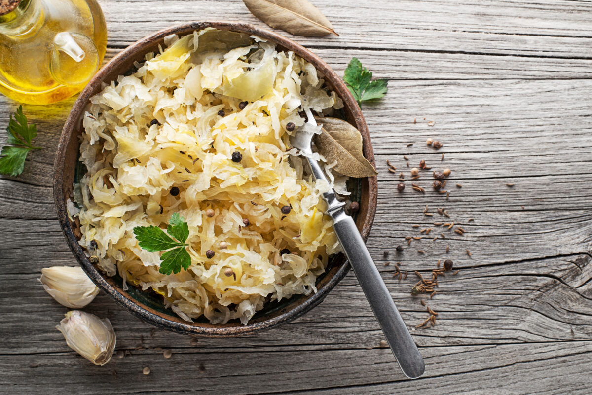

Sauerkraut

Sauerkraut in its beauty
Sauerkraut is more than Kraut. It warms your tummy and fills your heart.
Nothing tastes better than a warm Sauerkraut dish with some bread.
Ingredients
Steps
- Cut cabbage into small portions
- Put cabbage into jar
- Fill water into jar
- Let sit for a couple of days
Back